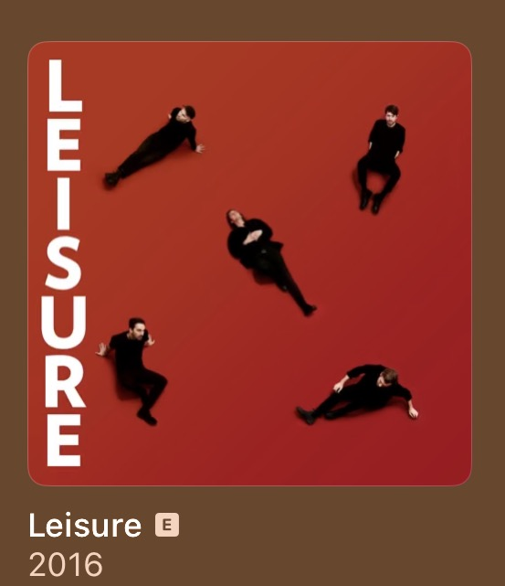
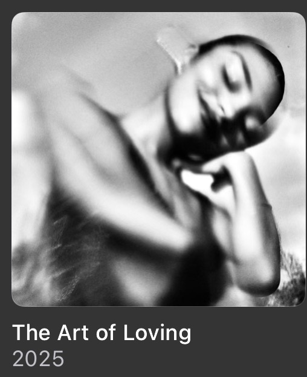
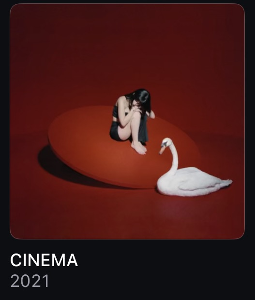
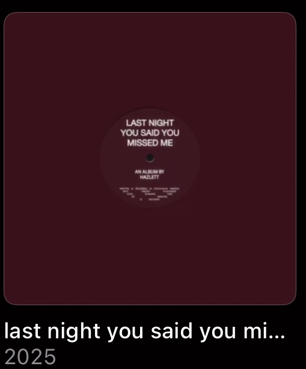
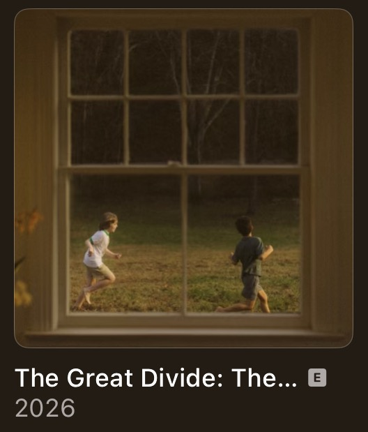
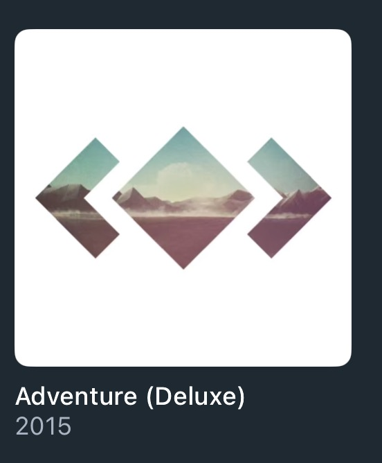

My Collection
This is my curated collection of albums that I love. Each album here represents something meaningful to me. Most of the albums are from the 2026 year, but a few of them are from my late teens and early 20's years. All of the albums have a special place in my heart and represent different moments in my life.

LEISURE 2016
Album | 2016 | Leisure
This album was one of the first album that I had heard from the band Leisure. They were introduced to me by someone that was a big part of my life after a major event happened in 2021. This reminds me of all of the nights we would spend listening to this album and discussing how everything was changing for me in a positive way.

The Art of Loving
Album | 2025 | Olivia Dean
This album was one of the albums that shows how to show emotions without being afraid to be vulnerable. It shows how to express yourself without being afraid of what others may think. It was one of the albums that me and my son would listen to every morning on our way to school It has great memories for me.

The Marias
Cinema | 2021 | The Marias
This album has a very unique sound that I really love. I love the singers voice and how they go back and forth between english and spanish. It makes them sound different from a lot of other bands. I found this album randomly on pandora and I have been obsessed with the band since then.

last night you said you missed me
2025
This is a part of my collection because this is another artist that I randomly found on pandora and fell in love with their music. I had followed him on instagram and when I was having issues with purchasing tickets to his concert, he reached out and was able to walk me through how to get them. All of my interactions with him have been positive and made me a bigger fan of his.

The Great Divide
2026
This album was an album that had no skips for me. It was an emotional album for me since there were a lot of songs about missing important people and not having them around anymore. It was an album that I listen to everyday and that I was able to experience in person and was one of the best concerts that I have been to.

Adventure
2015
This album was one that I listened to after high school and it was one that I listened to a lot during the summer. I was able to see Madeon in concert a year later and it was one that I would always remember listening to in person and having chills the whole night. Its an album that has great memories for me.